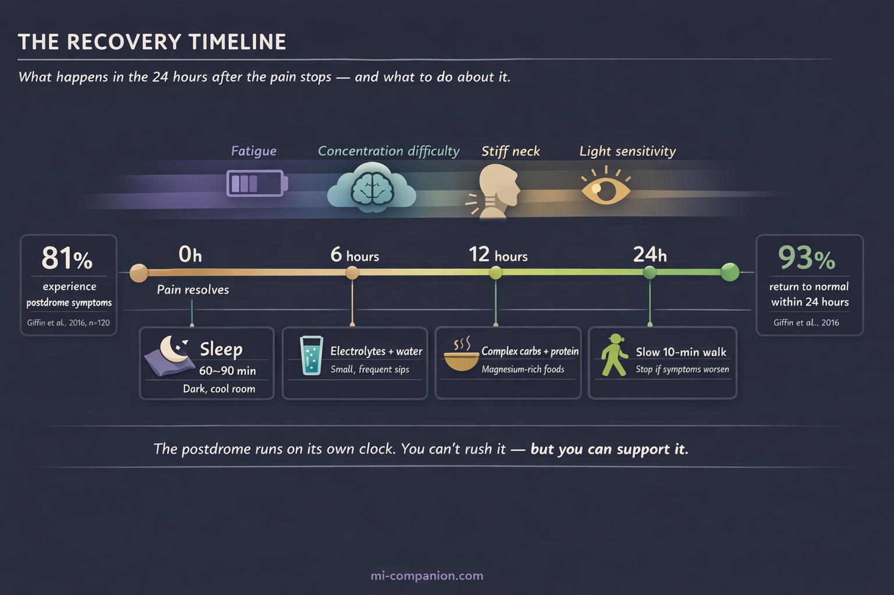

By Rustam Iuldashov
30 years lived experience with chronic migraine | Sources: 21 peer-reviewed references including Neurology (n=120), Cephalalgia (n=827), The Lancet Neurology, The Journal of Headache and Pain (n=631) | Last updated: March 11, 2026
Medical Review: This content is based on peer-reviewed research from Neurology, Cephalalgia, The Lancet Neurology, The Journal of Headache and Pain, Journal of Neurology Neurosurgery & Psychiatry, Clinical Neurology and Neurosurgery, Journal of Clinical Neuroscience, Nature Reviews Neurology, British Journal of Nutrition, and The FASEB Journal.
Important Notice: This article is for informational purposes only and does not replace professional medical advice. The author is not a licensed physician or healthcare professional. Always consult your doctor if your postdrome symptoms are unusual, worsening, or accompanied by new neurological signs.
Key Takeaways
- The migraine postdrome affects 80–97% of people with migraine and averages about 24 hours — it’s one of the most common yet least discussed phases of an attack[1][2][3]
- Brain imaging shows widespread reduced cerebral blood flow during the postdrome — this is a real neurological event, not just fatigue[4][5]
- Acute medications resolve the headache but don’t shorten the postdrome — it runs on its own biological clock[1][7]
- Hydrate with electrolytes, not just plain water: bone broth, coconut water, or low-sugar electrolyte drinks in small, frequent sips[8][9][10]
- Eat complex carbs paired with protein and magnesium-rich foods to restore depleted brain energy without spiking blood sugar[12]
- Sleep is your most powerful tool — a 60–90 minute nap in a dark room is neurological first aid, not laziness[13]
- Move gently if it feels right, but honor your body’s signals — your cerebral blood flow is still recovering[4][14]
The headache lifts. You open your eyes. And something is wrong.
Not pain — not exactly. Something deeper. A bone-level exhaustion that no amount of coffee can touch. A brain wrapped in wet cotton. The sense that someone drained your battery overnight, unplugged the charger, and left.
Welcome to the migraine postdrome. Neurologists call it the final phase of a migraine attack. The millions of people who drag themselves through it have a better name: the migraine hangover.
I’ve lived with migraine for 30 years. And for most of those years, I thought this wrecked-the-day-after feeling was just me — some personal weakness, a failure to bounce back. It isn’t. It’s neurology. And understanding what’s actually happening inside your head changes everything about how you recover.
Your Brain Isn’t Done Yet
Here’s the fact that changed how I think about the day after: the postdrome is not “being tired after a bad headache.” It is a distinct neurological event with measurable, visible changes in your brain.
A landmark prospective study tracked 120 migraine patients through electronic diaries over three months. The result: 81% reported at least one nonheadache symptom after the pain had stopped.[1] Fatigue. Brain fog. A stiff neck. A ghostly residual discomfort — not quite a headache, but a shadow of one.
And 81% may be an undercount. A 2023 meta-analysis pooling data across multiple studies found the proportion was likely even higher: 97% in the only population-based study, 86% in clinic-based samples.[2] The most common individual symptoms? Fatigue (52%), concentration difficulties (35%), and mood changes (29%).[2]
If you feel destroyed the day after a migraine, you are not weak. You are in the overwhelming majority.
How long does it last? A study of 827 patients found the average postdrome ran 25.2 hours.[3] For most people (88%), it resolved within a day. For 12%, it stretched beyond 24 hours.[3] And here’s a detail that surprised researchers: neither the severity of the migraine nor the medication used to treat it predicted how long the postdrome lasted.[1] The hangover runs on its own clock.
The Neurological Marathon Aftermath
Functional brain imaging has revealed something remarkable about the postdrome. Using arterial spin labeling MRI, researchers found widespread reduction in cerebral blood flow — in the frontal lobes, temporal lobes, thalamus, hypothalamus, and brainstem.[4][5] These are the regions that govern executive function, mood regulation, energy, and sensory processing. Essentially, every system you need to feel like a functioning human.
The analogy is almost too perfect: during a migraine, your brain runs a neurological marathon. The postdrome is the aftermath. Neural circuits depleted. Blood flow reduced. Processing power at a crawl.
What makes this even more interesting: the pons, hypothalamus, and visual cortex — structures that drive the migraine attack itself — remain active even after the pain stops and acute treatment kicks in.[6] This persistent activity explains why light sensitivity lingers, why sounds feel too loud, why your thinking stays sluggish hours after the headache itself has gone.
And it explains something that frustrated me for years. One critical finding across studies: abortive medications — NSAIDs, triptans — resolve the headache but do not shorten the postdrome.[1][7] The pain stops. The recovery doesn’t speed up. This isn’t a failure of your medication. It’s evidence that the postdrome is a separate biological process — not residual pain, but your brain’s way of rebooting.

What Actually Helps: The Recovery Playbook
No clinical trial has ever tested a treatment designed specifically for the postdrome. That’s a gap in the research, and a significant one. But the science of what’s happening in your brain — combined with decades of collective patient wisdom — points to clear, practical strategies.
Hydrate Smarter, Not Just More
Your brain is roughly 75% water. Even a 1–2% drop in body water impairs cognition and worsens headache.[8] After a migraine — especially one involving vomiting, hours curled in a dark room, or simply forgetting to drink — your fluid and electrolyte balance is disrupted.
Plain water helps. But it’s not enough. Adding electrolytes — sodium, potassium, magnesium — improves intestinal absorption and supports the nerve signaling your depleted brain needs.[9] A warm bone broth. Coconut water. A low-sugar electrolyte solution. These work better than water alone.
One key principle: small, frequent sips beat gulping a big glass. Drinking too much plain water without electrolytes can actually dilute your sodium levels, making things worse.[9]
A cross-sectional study of 256 women with migraine found that those who drank 1.5 liters or more daily had significantly lower headache severity and disability.[10] Hydration won’t cure migraine. But underhydrating certainly feeds it.
Eat for Recovery, Not Comfort
Your brain’s energy reserves are spent. The craving for fast carbohydrates — bread, sugar, chocolate — may be biological: the hypothalamus drives food-seeking behavior as part of the recovery process.[11] Your brain is hungry. Literally.
But a blood sugar spike followed by a crash can deepen the cognitive fog. The better play: complex carbohydrates paired with protein. Oatmeal with nuts. Eggs on whole-grain toast. Avocado on a rice cake. These deliver steady glucose without the rollercoaster.
Pay special attention to magnesium-rich foods: dark leafy greens, bananas, pumpkin seeds, almonds. Electrolyte imbalances — particularly low magnesium — have been linked to heightened neuronal excitability.[9][12] Restoring magnesium may help calm the overactive circuits that are keeping you in recovery mode.
Sleep: Neurological First Aid
Sleep may be the most powerful postdrome intervention that exists. In 1982, Blau published a foundational study showing that 47 of 50 migraine patients experienced recovery-phase symptoms — and that daytime sleep, averaging 2.5 hours, could shorten the active headache phase.[13] More recent research suggests sleep helps by restoring ion balance, clearing metabolic waste, and resetting sensory thresholds.
During the postdrome, your body is asking for rest. Not suggesting it. Asking.
A 60–90 minute nap in a dark, cool room isn’t laziness. It’s neurological first aid. If you can’t nap, even lying quietly with your eyes closed in a dim room gives your brain a chance to reduce its processing load.
Move Gently — or Don’t
Exercise is one of the best long-term migraine preventives. The postdrome is not the time. Fatigue, weakness, and photophobia — hallmark postdromal symptoms — reduce physical capacity, and your cerebral blood flow is already running below normal.[14][4]
But there’s a middle ground. A slow 10-minute walk outside — natural light, gentle pace — can improve circulation, lift mood, and quietly signal your nervous system that the crisis has passed. The key word is gentle. If you feel worse, stop. Your body is not being dramatic. It’s giving you accurate information.
Guard Your Senses
The sensory hypersensitivity of the headache phase often persists into the postdrome.[6][15] Light hurts a little more. Sound grates a little harder. Screens exhaust you faster than usual.
This isn’t your imagination. Your neural thresholds are genuinely lower. Dim your screens. Wear sunglasses if the world feels too bright. Skip the noisy restaurant. These aren’t excessive precautions — they’re informed ones.
The Most Important Hack Is Permission
Here is the thing nobody tells you about the migraine postdrome: the biggest obstacle to recovery is guilt.
In one study, 82.8% of postdrome patients reported a meaningful impact on their quality of life.[7] Yet many of us push through — powering back to work, overriding the exhaustion, pretending we’re fine because the headache is “over.”
The postdrome is not weakness. It is not drama. It is your brain completing a biological process. Brain imaging proves it. Pushing too hard risks extending the recovery — or triggering a rebound attack.
Grant yourself the same grace you’d give someone recovering from the flu. Because neurologically, the comparison isn’t far off.
⚠️ When to Seek Emergency Care
Seek immediate medical attention if you experience a sudden headache distinctly different from your usual migraine and more severe than any you’ve had before, new neurological symptoms such as vision loss, one-sided weakness, confusion, or difficulty speaking, headache accompanied by fever and stiff neck, or symptoms that progressively worsen instead of gradually resolving.
⚕️ Important Medical Disclaimer
This article is for informational and educational purposes only and does not constitute medical advice, diagnosis, or treatment. The author, Rustam Iuldashov, is not a licensed physician, neurologist, or healthcare professional. He is a patient advocate with 30 years of personal experience living with chronic migraine.
All clinical claims in this article are sourced from peer-reviewed research published in indexed medical journals. Study designs and sample sizes are noted where applicable.
Always consult a qualified healthcare provider for questions about your individual health, migraine recovery, or postdrome management. If your postdrome symptoms are unusual, worsening, or accompanied by new neurological signs, seek medical attention promptly.
Hydration and nutritional strategies described in this article are general wellness recommendations and should complement — never replace — professional medical care. This content was last reviewed for accuracy on March 11, 2026.
References
- Giffin NJ, Lipton RB, Silberstein SD, Olesen J, Goadsby PJ. “The migraine postdrome: An electronic diary study.” Neurology, 87(3):309–313 (2016). doi:10.1212/WNL.0000000000002789. Study design: Prospective electronic diary study. n=120.
- Christensen RH, Eigenbrodt AK, Ashina H, Steiner TJ, Ashina M. “What proportion of people with migraine report postdromal symptoms? A systematic review and meta-analysis of observational studies.” Cephalalgia, 43(10):3331024231206376 (2023). doi:10.1177/03331024231206376. Study design: Systematic review and meta-analysis. n=14 studies pooled.
- Kelman L. “The postdrome of the acute migraine attack.” Cephalalgia, 26(2):214–220 (2006). doi:10.1111/j.1468-2982.2005.01026.x. Study design: Retrospective clinical survey. n=827.
- Bose P, Karsan N, Zelaya F, Goadsby PJ. “Alterations in cerebral blood flow during the postdrome phase of a migraine attack captured with arterial spin labelled (ASL) MRI.” Journal of Neurology, Neurosurgery & Psychiatry, 88:A9 (2017). doi:10.1136/jnnp-2017-ABN.26. Study design: Functional neuroimaging study. n=12.
- Bose P, Karsan N, Goadsby PJ. “The Migraine Postdrome.” Continuum (Minneap Minn), 24(4):1023–1031 (2018). doi:10.1212/CON.0000000000000626. Study design: Clinical review.
- Messina R, Rocca MA, Goadsby PJ, Filippi M. “Insights into migraine attacks from neuroimaging.” The Lancet Neurology, 22(10):932–945 (2023). doi:10.1016/S1474-4422(23)00152-7. Study design: Narrative review of functional neuroimaging.
- Carvalho IV, Fernandes CS, Damas DP, et al. “The migraine postdrome: Clinical characterization, influence of abortive treatment and impact in the quality of life.” Clinical Neurology and Neurosurgery, 221:107408 (2022). doi:10.1016/j.clineuro.2022.107408. Study design: Cross-sectional clinical study. n=100.
- Blau JN. “Water deprivation: a new migraine precipitant.” Headache, 45(6):757–759 (2005). doi:10.1111/j.1526-4610.2005.05143_3.x. Study design: Clinical observation.
- Stanton AA. “Electrolyte Homeostasis in Migraine.” The FASEB Journal, 31(1 Supplement):1027.1 (2017). doi:10.1096/fasebj.31.1_supplement.1027.1. Study design: Observational analysis with theoretical framework.
- Khorsha F, Mirzababaei A, Togha M, Mirzaei K. “Association of drinking water and migraine headache severity.” Journal of Clinical Neuroscience, 77:81–84 (2020). doi:10.1016/j.jocn.2020.05.034. Study design: Cross-sectional. n=256.
- Karsan N, Goadsby PJ. “Biological insights from the premonitory symptoms of migraine.” Nature Reviews Neurology, 14:699–710 (2018). doi:10.1038/s41582-018-0098-4. Study design: Review.
- Arab A, Khorvash F, Heidari Z, Askari G. “Is there a relationship between dietary sodium and potassium intake and clinical findings of a migraine headache?” British Journal of Nutrition, 127(12):1839–1848 (2022). doi:10.1017/S000711452100283X. Study design: Cross-sectional. n=266.
- Blau JN. “Resolution of migraine attacks: sleep and the recovery phase.” Journal of Neurology, Neurosurgery & Psychiatry, 45(3):223–226 (1982). doi:10.1136/jnnp.45.3.223. Study design: Prospective observational. n=50.
- Karsan N, Peréz-Rodríguez A, Nagaraj K, Bose PR, Goadsby PJ. “The migraine postdrome: Spontaneous and triggered phenotypes.” Cephalalgia, 41(6):721–730 (2021). doi:10.1177/0333102420975401. Study design: Experimental/observational. n=53 + n=42.
- Thuraiaiyah J, Ashina H, Christensen RH, et al. “Postdromal symptoms in migraine: a REFORM study.” The Journal of Headache and Pain, 25:25 (2024). doi:10.1186/s10194-024-01716-3. Study design: Cross-sectional. n=631.
- Ferrari MD, Goadsby PJ, Burstein R, et al. “Migraine.” Nature Reviews Disease Primers, 8:2 (2022). doi:10.1038/s41572-021-00328-4. Study design: Comprehensive review.
- Spigt MG, Kuijper EC, Schayck CP, et al. “Increasing the daily water intake for the prophylactic treatment of headache: A pilot trial.” European Journal of Neurology, 12(9):715–718 (2005). doi:10.1111/j.1468-1331.2005.01081.x. Study design: RCT pilot. n=18.
- Quintela E, Castillo J, Muñoz P, Pascual J. “Premonitory and resolution symptoms in migraine: a prospective study in 100 unselected patients.” Cephalalgia, 26(9):1051–1060 (2006). doi:10.1111/j.1468-2982.2006.01157.x. Study design: Prospective observational. n=100.
- Ng-Mak DS, Fitzgerald KA, Norquist JM, et al. “Key concepts of migraine postdrome: a qualitative study to develop a post-migraine questionnaire.” Headache, 51(1):105–117 (2011). doi:10.1111/j.1526-4610.2010.01817.x. Study design: Qualitative. n=20.
- Thuraiaiyah J, Christensen RH, Al-Khazali HM, et al. “Overlap between perceived triggers, premonitory symptoms and symptom persistence across migraine phases: A REFORM study.” Cephalalgia, 45(8) (2025). doi:10.1177/03331024251364234. Study design: Cross-sectional. n=631.
- Peng KP, May A. “Redefining migraine phases — a suggestion based on clinical, physiological, and functional imaging evidence.” Cephalalgia, 40(8):866–870 (2020). doi:10.1177/0333102419898868. Study design: Review/Commentary.

How We Create Content
- Peer-reviewed sources only. Neurology, Cephalalgia, The Lancet Neurology, The Journal of Headache and Pain, Journal of Neurology Neurosurgery & Psychiatry, Clinical Neurology and Neurosurgery, Journal of Clinical Neuroscience, Nature Reviews Neurology, Nature Reviews Disease Primers, British Journal of Nutrition, European Journal of Neurology, Headache, The FASEB Journal.
- Study transparency. Study design and sample sizes noted for all clinical references.
- Source verification. All claims backed by numbered references with DOI links.
- Experience + Science. 30 years personal migraine experience combined with peer-reviewed evidence.
- Regular updates. Articles reviewed when significant new research emerges.
- No conflicts of interest. No funding from hydration product, supplement, or pharmaceutical companies.
Track Your Recovery. Understand Your Patterns.
Migraine Companion helps you log every phase of an attack — including the postdrome. See how long your recovery really takes, what helps, and share the data with your doctor.
Last reviewed: March 2026
Next scheduled review: September 2026